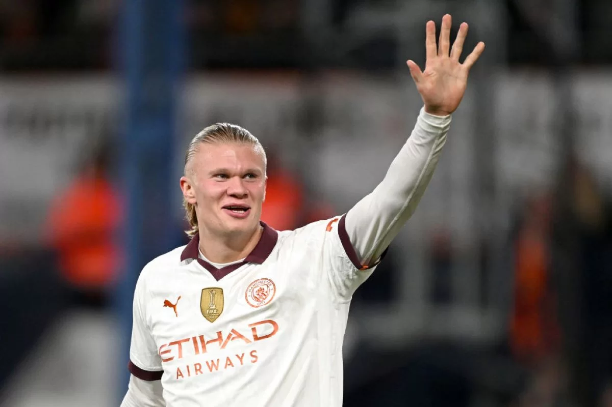
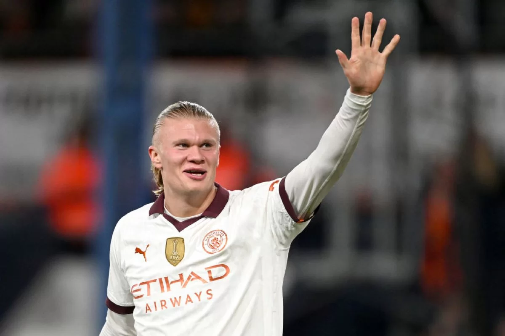

Champions League 23/24: Os artilheiros da liga dos campeões.
Erling Haaland, Kylian Mbappé e Harry Kane surgem como grandes candidatos à artilharia na atual edição.
Começou o mata-mata da Champions League 2023/24. Além do espetáculo em campo e dos emocionantes confrontos, a corrida pela artilharia também chama a atenção dos fãs do futebol. Erling Haaland, Kylian Mbappé, Harry Kane... todos são grandes candidatos, mas quem terminará como maior goleador?
Artilheiros
 

| Nome | Gols | Time | Nacionalidade |
|---|---|---|---|
| kylian mbappé | 8 | PSG | Francês |
| Harry Kane | 7 | Bayern de Munique | Britânico |
| Erling Haaland | 6 | Manchester City | Norueguês |